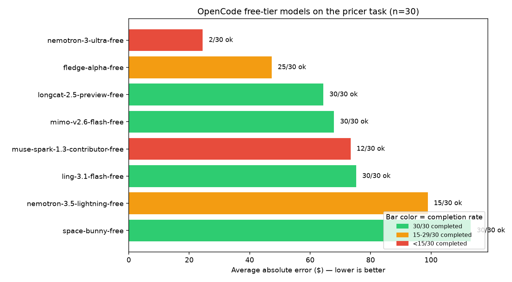
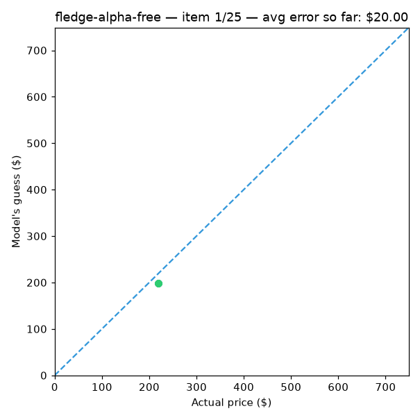

🧭Abstract
This project asks a simple question — given nothing but a product's title, category, and a short description, can a free AI model estimate its real-world price? — and answers it with real numbers instead of marketing claims.
Eight free language models were each shown 30 real product listings and asked to name a price, in US dollars, no explanation. Their guesses were then compared to the actual sale price, scored the same way a well-known public benchmark (ed-donner/pricer) scores GPT-4.1-Nano, GPT-5.6 Luna, and TypeSafe's Jev.
The best model landed within $47 on average on a task where prices range from $0.50 to nearly $1,000 — competitive with much larger, paid models. The project also surfaced a less flattering but equally important finding: free-tier availability fluctuates significantly, and a trustworthy benchmark has to show that variance instead of hiding it. Every number on this page is traceable to a CSV file in this repository — nothing here is simulated.
💡What is this, in plain English?
If you've never worked with AI language models before, here's the 30-second version:
1. The task
We give an AI a product description — like "Old Blood Noise Excess V2 Distortion Chorus/Delay Pedal" with a short summary — and ask it to guess the price in dollars. No hints, no catalog lookup. Just world knowledge.
2. The scoring
We know the real price because the data comes from actual product listings. We compare the AI's guess to the truth and measure how far off it was, on average, across 30 different products.
3. The models
Instead of paying for a premium API, we used nine AI models currently offered for free and asked: are they actually any good, and can you actually rely on them?
4. The honesty check
Free things are often unreliable. So this project ran the same test multiple times and reports how often each model even finished the job, not just how accurate it was when it did.
📊Results at a glance


fledge-alpha-free's 25 real predictions land, one at a time. Points on the dashed line are perfect guesses; green/orange/red mark how close each guess was.Full scoreboard
| Model | Completed | Avg error | r² | Avg latency |
|---|---|---|---|---|
| fledge-alpha-free | 25/30 | $47.31 | 78.9% | 56.6s |
| longcat-2.5-preview-free | 30/30 | $64.39 | 64.8% | 58.8s |
| mimo-v2.6-flash-free | 30/30 | $67.93 | 56.7% | 37.3s |
| muse-spark-1.3-contributor-free | 12/30 | $73.39 | 58.2% | 58.5s |
| ling-3.1-flash-free | 30/30 | $75.25 | 57.8% | 72.1s |
| nemotron-3.5-lightning-free | 15/30 | $98.92 | -25.1% | 95.9s |
| space-bunny-free | 30/30 | $113.16 | -33.9% | 38.4s |
| nemotron-3-ultra-free | 2/30 | $24.48 | -428.9% | 89.7s |
30/30 completed 15-29/30 under 15/30 — treat rows with low completion as unreliable samples, not real rankings. See the beginner guide for what "r²" and "avg error" actually mean.
🧰What can you actually do with this repo?
Benchmark your own models
Swap in any model ID your own AI provider exposes and get the same error/latency/reliability scoreboard, for free, with one command.
Learn AI evaluation from scratch
The beginner guide below walks through every metric used here — no prior data science background assumed.
Stress-test a "free tier" before depending on it
The multi-run reliability data gives you a template for finding out whether a free API is actually production-ready, before you build on it.
Use it as a template for your own benchmark
The scoring harness, CSV logging, chart generation, and this very page are all generic — point them at a different task and dataset and reuse the whole pipeline.
Teach or learn prompt design
The prompting lesson section below uses a real, citable example to show how the exact wording of a prompt changes cost, speed, and accuracy.
Interview prep
Read the beginner guide and quiz below end to end and you'll be able to speak fluently about MAE, r², rate limiting, and evaluation bias — the kind of thing that comes up in real AI/ML interviews.
🌱Beginner guide — read this and you are a professional
Everything below assumes you know nothing about AI evaluation yet. By the end, you'll know more about how to read an AI benchmark than most people who claim to work in the field.
What is a "model" here?
A language model is software trained on huge amounts of text that can answer questions, write text, or — as in this project — make an estimate. "Free-tier" just means the provider lets you use it without paying, usually with some limits on how much or how fast you can use it.
What does the model actually see?
For every product, the model receives a short, cleaned-up description — title, category, brand, and a one-sentence summary — and this exact instruction:
Estimate the price of this product. Respond with the price, no explanation.That's it. No catalog, no internet access, no hints. It has to rely on whatever it learned during training about what things like this typically cost.
How do you measure if a guess is "good"?
Average error (also called MAE — Mean Absolute Error)
Take every guess, subtract the real price, ignore whether it was too high or too low (that's the "absolute" part), and average all those differences. An average error of $47 means: across 30 different products, the model's guesses were off by $47 on average. Lower is better. It's the single easiest number to explain to a non-technical person.
MSE (Mean Squared Error)
Like average error, but each mistake is squared before averaging. Squaring punishes big misses much harder than small ones — being off by $200 counts 100× worse than being off by $20, not 10× worse. Useful when a few huge mistakes matter more to you than many small ones.
r² ("r-squared")
This answers: "compared to just guessing the average price every single time, how much better is this model actually doing?" It's expressed as a percentage-like score:
- r² near 100% — the model is tracking real prices closely.
- r² near 0% — the model is doing roughly as well as always guessing the dataset's average price. Not impressive.
- r² below 0% (yes, this is possible and happens twice in this dataset) — the model is doing worse than if it had just guessed the same average number every time, ignoring the product entirely.
Completion rate (OK / 30)
Before you trust any accuracy number, check how many of the 30 requests actually succeeded. A model that completed only 2 of 30 requests and happened to get both close to right will show a great "average error" that means almost nothing — that's survivorship bias, and it's one of the most common ways benchmarks mislead people.
Latency
How long, in seconds, it took to get an answer back. Important caveat specific to this project: these free models can only be reached through a full AI-agent request (see the FAQ), which adds real overhead — so these latency numbers measure something different from a bare, stripped-down API call to a paid model.
Why does the same model get different scores in different runs?
Two reasons. First, many of these models have some randomness built in, so the exact same question can get a slightly different answer each time. Second — and this turned out to be the bigger factor here — free-tier backends can be under heavier or lighter load depending on when you run the test, which changes how many requests time out. See Reliability across runs below for real evidence of this.
🧠A real lesson in prompt design
One of the most famous findings in AI research is almost absurdly simple: appending a short phrase to a question can make a model "think" before answering and noticeably improve its accuracy on reasoning problems — without giving it a single example to learn from. Researchers Kojima and colleagues (2022) tested several such phrases and found this one worked best:
"Let's work this out in a step-by-step way to be sure we have the right answer."
This project deliberately does the opposite. The prompt explicitly says "no explanation" and asks for just a number. Why? Because this benchmark is measuring quick, instinctive estimation — closer to what a human expert glances at and guesses, not a problem that benefits from showing your work. Step-by-step reasoning tends to cost more tokens, more time, and more money, and for a task this simple it may not even improve the answer.
Try it yourself: fork this repo, add the step-by-step phrase to SYSTEM_PROMPT in benchmark.py, and re-run. Does accuracy improve enough to justify several times the latency and token cost? That tradeoff — reasoning quality vs. speed vs. cost — is one of the most practical skills in working with AI models.
🔁Reliability across runs — the part most benchmarks hide
This benchmark was run three separate times, hours apart, under different conditions. The headline accuracy numbers barely matter if the model can't reliably respond in the first place — so here's the full picture:
| Run | Conditions | Models that hit 30/30 |
|---|---|---|
| 1 | Initial network path, no retry, 90s timeout | 2 of 9 |
| 2 | Different network path, 1 retry, 150s timeout | 8 of 8 |
| 3 (shown above) | Same settings as run 2, different time of day | 3 of 8 |
The takeaway: completion rate for these free models swings dramatically based on when you run the test, not just which network you're on. If you're evaluating a free-tier API for anything real, run it more than once, at different times, before trusting a single pass.
Run 2 in detail — the cleanest sweep, and how it stacks up
Run 2 is the only sweep where every model completed all 30 calls — the most trustworthy comparison this project produced:
| Rank | Model | Avg error | MSE | r² | Avg latency |
|---|---|---|---|---|---|
| 1 | muse-spark-1.3-contributor-free | $34.84 | 3,242 | 87.6% | 37.6s |
| 2 | nemotron-3-ultra-free | $50.04 | 7,424 | 71.6% | 58.8s |
| 3 | fledge-alpha-free | $55.27 | 6,960 | 73.4% | 33.4s |
| 4 | mimo-v2.6-flash-free | $63.56 | 10,523 | 59.7% | 29.0s |
| 5 | longcat-2.5-preview-free | $64.01 | 8,569 | 67.2% | 25.6s |
| 6 | ling-3.1-flash-free | $70.85 | 10,695 | 59.1% | 53.0s |
| 7 | nemotron-3.5-lightning-free | $93.65 | 41,342 | -58.1% | 25.6s |
| 8 | space-bunny-free | $126.27 | 32,506 | -24.3% | 21.3s |
How this stacks against the original notebook's numbers (GPT-4.1-Nano $68.00, Luna $54.91, Jev single-pass $58.78 — all n=200, via direct OpenRouter calls):
muse-spark-1.3-contributor-freeat $34.84 beats all three reference models, including Jev and Luna — and at r²=87.6% it isn't just a couple of lucky guesses.nemotron-3-ultra-free($50.04) andfledge-alpha-free($55.27) land right around Luna's level.mimo-v2.6-flash-free,longcat-2.5-preview-free, andling-3.1-flash-freecluster near GPT-4.1-Nano's level.nemotron-3.5-lightning-freeandspace-bunny-freepost negative r² — worse than always guessing the dataset's average price. A single $870 miss on a cheap item did most of the damage fornemotron-3.5-lightning-free.
Why this isn't the headline table above: run 2 predates this repo's per-item CSV logging, so unlike the Results table, there's no results/<model>.csv backing these specific figures — they're reconstructed from that session's console output, not independently re-verifiable the same way. Real, and reproducible yourself, but not carrying the same raw-data guarantee the rest of this page holds itself to. That's exactly why Results above uses run 3 as the committed, fully-traceable headline, even though run 2 looks better.
🎓Test yourself — from scratch to pro
Ten questions, three difficulty tiers. Everything you need to answer them is on this page. This runs entirely in your browser — nothing is sent anywhere.
🛠️Run it yourself
pip install -r requirements.txt
# start your local AI agent server (needs a free-tier provider configured)
opencode serve --port 4096
# run the benchmark — regenerates every CSV and PNG in results/
python3 benchmark.py --size 30 --workers 4
# regenerate this page's charts and GIF from the fresh data
python3 scripts/make_assets.pySwap --models for any model IDs your provider exposes, and --size for however many test items you want to score (the original reference benchmark uses 200).
❓FAQ
Why can't I just call these models with a normal, lightweight API request?
These particular free models are gated behind a full agent runtime. A request with the tool-calling context stripped out gets rejected outright. A custom system-prompt override is fine — it's specifically removing the tool definitions that triggers the rejection. This was confirmed by isolating the two settings in separate test calls. Practical effect: every call carries real overhead, so latency numbers here reflect that, not a bare completion call.
Is $0 cost really $0, no catch?
Within this benchmark, yes — every call returned a cost of exactly $0.00. Free-tier terms can change, and availability (see Reliability above) is the real cost: your time waiting on retries and failed calls.
Why exclude one of the nine models entirely?
One model's ID consistently returned a routing error ("no route matching") rather than a timeout — a sign it's been removed or renamed on the provider's side, not a reliability issue a retry can fix. It was confirmed broken in isolated re-tests before being excluded.
Can I trust the exact dollar figures?
Trust the ranking more than the exact numbers. With 30 items per model, you have enough signal to say "model A is clearly better than model B" but not enough to say "model A is exactly $3.12 better." Scale up --size for tighter numbers.